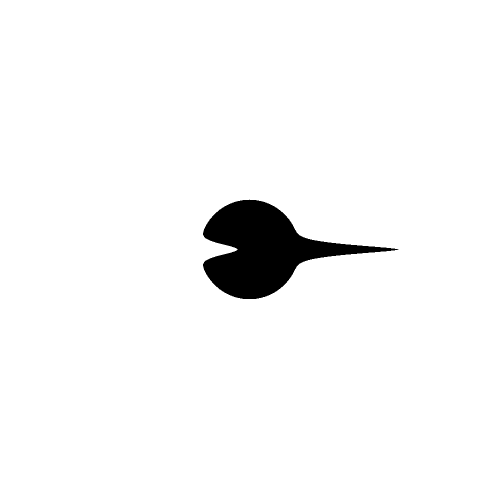

Run of com.github.skac112.klee.painters.Painter2 painter
Time: 22-12-02_10:28:32Git hash: 9c70244
Painter parameters
- frontDecay: 0.697178393860065
- to: Point(0.3542261234140405,0.0)
- sideDecay: 19.91737056183136
- from: Point(0.12,0.0)
- backDecay: 6.7730017147163055
Render parameters
- X range: <-0.5; 0.5>
- Y range: <-0.5; 0.5>
- nx: 1000, ny: 1000
